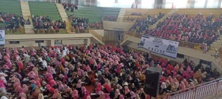
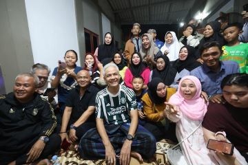

Artikel Terbaru
James Gunn 'Buang' 6 Bintang Justice League Era Snyder
Daftar Jabatan Luhut yang Kini Dipegang Erick Thohir
Topik Teratas
Artikel Teratas
-

Ribuan Relawan Mak-Mak Anies Gelar Istighosah untuk Kesuksesan AMIN pada Pilpres 2024
Kamis, 12 Oktober 2023 - 09:04 WIB -
Prabowo dan Erick Thohir, 2 Menteri Andalan Jokowi Meraih Elektabilitas Tertinggi di Jatim
Rabu, 11 Oktober 2023 - 23:10 WIB -

Ganjar Menginap dan Ngariung di Kampung Nyalindung Bogor, Warga: Benar-Benar Merakyat
Kamis, 12 Oktober 2023 - 00:24 WIB